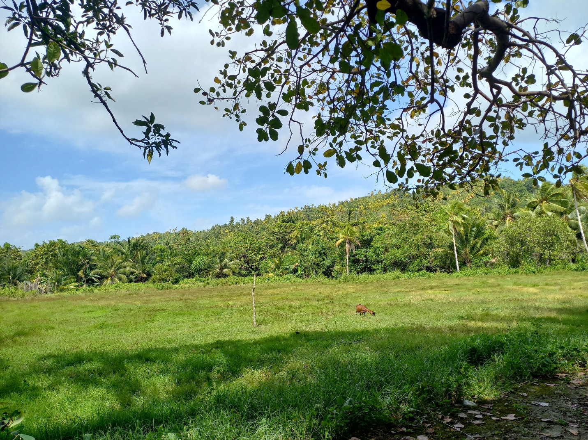

Desa paling selatan di Kecamatan Kaledupa, Kabupaten Wakatobi — desa pesisir dan perbukitan yang kaya akan mata air, hutan hak, mangrove, dan potensi pertanian yang berkelanjutan.
Desa Balasuna Selatan
Kecamatan Kaledupa
Kabupaten Wakatobi
Provinsi Sulawesi Tenggara
Pemekaran dari Desa Balasuna pada 2007, definitif sejak 2008 dengan 3 dusun.
Adil — menjabat sejak tahun 2021 hingga sekarang.
Seluruh masyarakat beragama Islam; bahasa sehari-hari Bahasa Kahedupa, bagian dari Masyarakat Adat Barata Kahedupa.